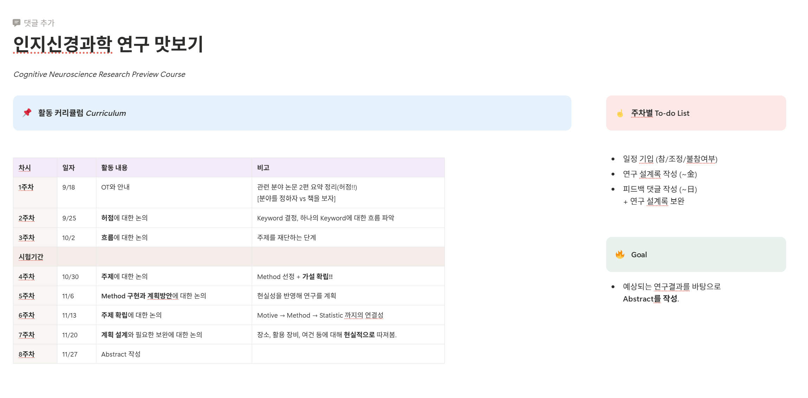
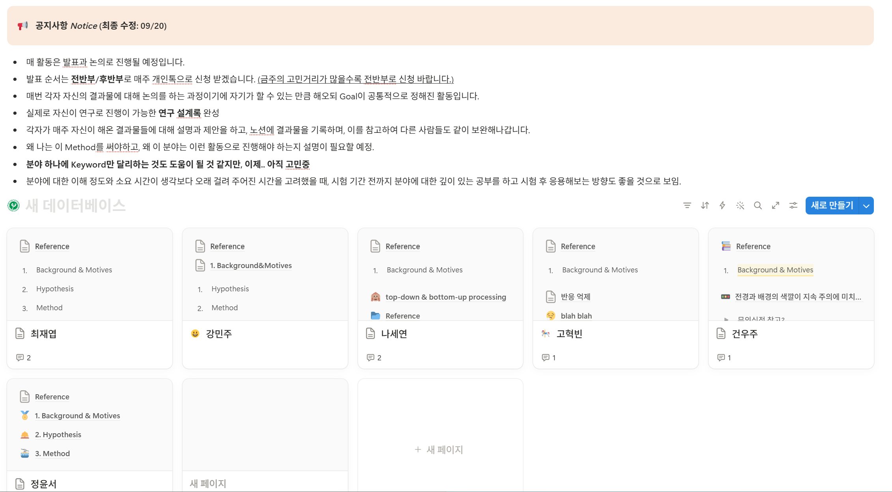
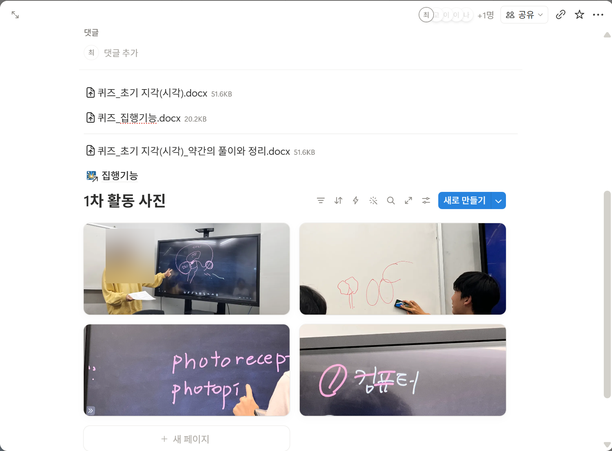
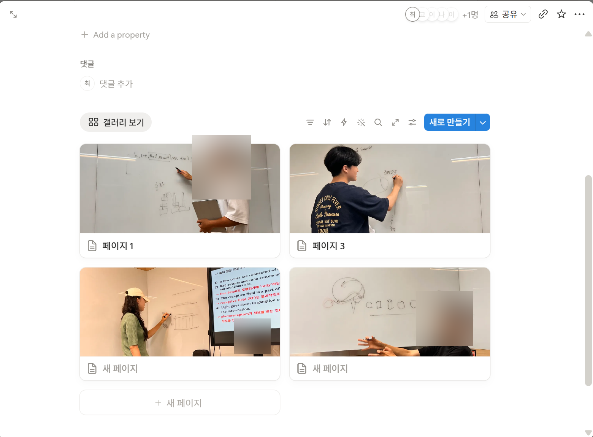
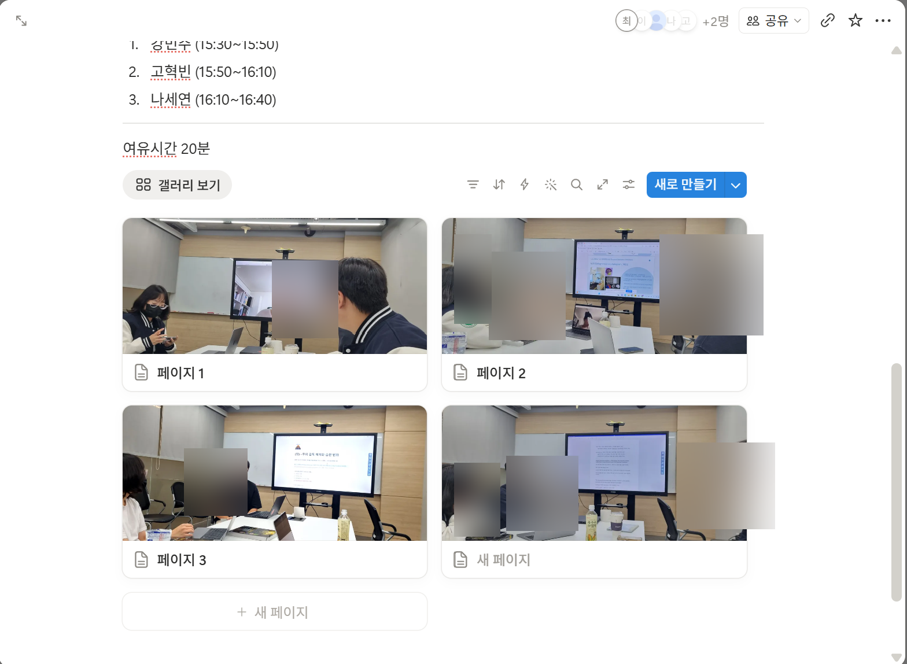
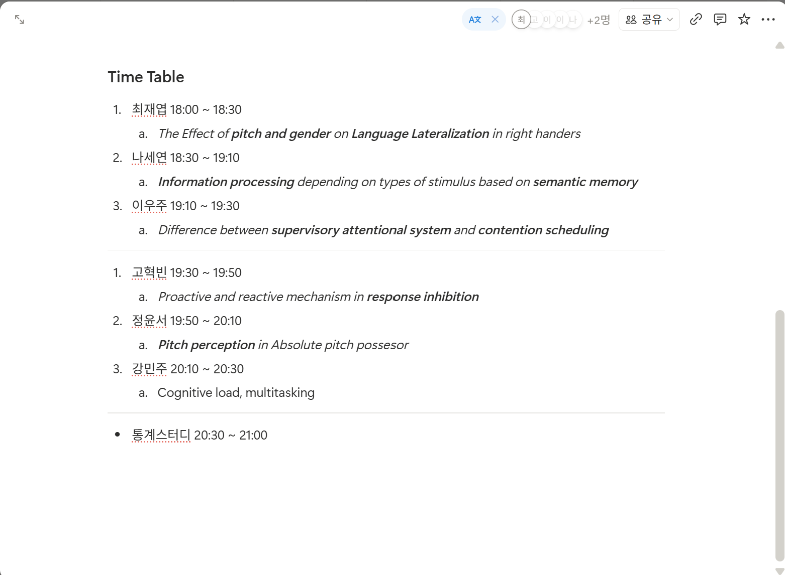
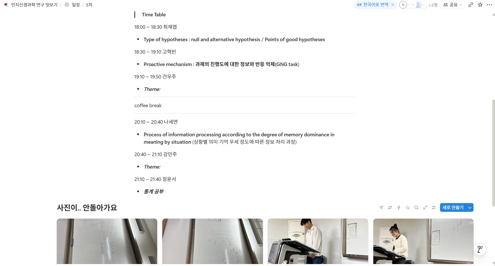
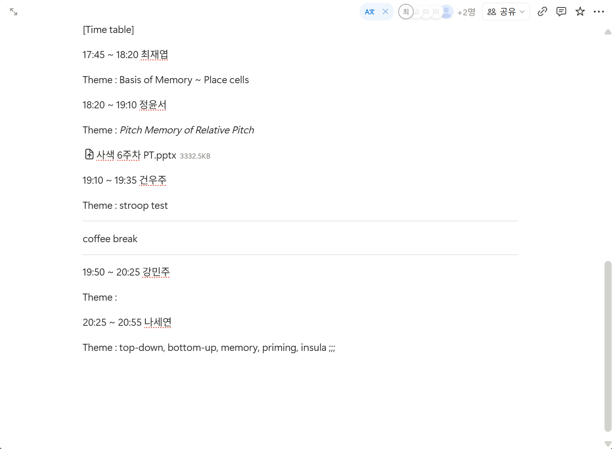

About
안녕하세요. 저는 중앙대학교에서 심리학을 공부 중인 최재엽입니다.
뇌과학으로 사람을 이해하고, 여러 학문을 통해 세상에 대한 이해를 넓혀 인류의 행복 증진에 기여하는 것을 목표로 하고 있습니다.
Education
-
재학 중
중앙대학교 (Chung-Ang University)
본전공 · 심리학과 (Major in Psychology)
부전공 · 경제학부 (Minor in Economics)
Research Interests
Current Research Focus
Today, my research interest is on brain functioning based on Functional Localization. In particular, I am especially interested in how the brain processes the visual information we perceive. Roughly 80% of the information we take in is known to be visual, and it arguably exerts a profound influence on how we understand the world.
Here are some of the keywords I am eager to explore:
Long-term Vision
As a first step, I aim to make the very definition of brain functioning more rigorous and precise by observing and analyzing the brain with modern neuroimaging technology. Building on this, I pursue two complementary modes of reasoning: a deductive approach that uses mathematics as a language to explain brain function through logic, and an inductive approach that draws on machine learning and statistical methods to characterize brain function from data. Ultimately, I hope to connect these insights with engineering to develop practical technologies that genuinely advance human happiness.
Publications & Presentations
- J. Choi†, S. Han, J. Hong, S. Ra, S. Bae, E. Lee, S. Cho*. "The Effect of Stimulus Type on Visual Field Advantages." Poster presented at the 77th Annual Conference of the Korean Psychological Association, "AI시대, 다시 생각하는 Human Mind," 2023. — 학부생 포스터 부문 우수상 (Best Undergraduate Poster Award) PDF Abstract
† First author & Presenting author · * Corresponding author (조수현 교수님)
Awards & Honors
-
2023
한국심리학회 학부생 포스터 부문 우수상 🏆 AWARD
제77차 한국심리학회 연차학술대회 'AI시대, 다시 생각하는 Human Mind'에서 연구 책임자(제1저자)로서 연구를 주도하여 수상.
교신저자/지도교수 · 조수현 교수님
📷 포스터 발표·시상 현장 · 썸네일을 클릭하면 크게 볼 수 있어요.
-
2022
제1차 연차사색대회 최우수팀 🏆 AWARD
중앙대학교 심리학과 학술 소모임 '사색'이 주최한 '디지털 시대의 심리학(Psychology in the Digital Age)' 대회에서 '디지털 시대, 스마트기기는 우리에게 어떤 인지적 영향을 미치는가?'를 주제로 발표하여 최우수팀으로 선정.
지도교수 · 김재휘 교수님
{kind=link}
{kind=link}
{kind=link}
{kind=link}
Experience & Activities
🔬 학술 활동
-
2023 겨울 ~ 2024.02
BCSC 5기 수료 ↗ 홈페이지
뇌와 인지에 관심 있는 학부생들이 모인 학회 BCSC(Brain and Cognitive Science Community) 5기에서 '뇌인지 C조'로 활동. 논문 리뷰를 작성하고 조원들과 함께 토론(discussion)을 진행.
리뷰 논문 · 이혜원, 김선경, 이고은, 정유진, & 박지윤. (2012). 연령에 따른 인지 변화 양상. 한국심리학회지: 인지 및 생물, 24(2), 127–148.
-
2023-2
'인지신경과학 연구 맛보기' 프로그램 기획·운영
학술 소모임 '사색'이 주관한 프로그램을 활동책임자로서 직접 기획하고 운영. 매주 커리큘럼과 발표 타임테이블을 구성하고, 조원들의 연구 주제 발표를 이끔.








📷 프로그램 운영 기록 · 썸네일을 클릭하면 크게 볼 수 있어요.
-
2023-1
'학부생 포스터팀' 팀장 · 학부 연구 수행
약 6개월간 Cognitive Psychology and Neuroscience Laboratory의 주간 랩미팅에 참석하여 대학원생·지도교수님께 연구 피드백을 받았고, 팀 회의를 주 2회 진행하며 연구를 이끎. Eye-tracker를 활용한 행동 실험 프로그램을 직접 기획하고 약 2개월간 실험을 수행, 그 결과를 포스터로 게재하여 우수상을 수상.
🔬 실험 자료 자세히 보기
시각장(좌·우)에 따라 얼굴 자극과 단어 자극의 처리 우세가 어떻게 달라지는지를 반응시간(RT) 기반 행동 실험으로 측정. 참가자는 손잡이 설문(Edinburgh·Waterloo·Dutch Handedness Inventory)으로 오른손잡이를 선별하고, eye-tracker로 응시를 통제.
얼굴 자극 예시 (Face stimuli)
얼굴 자극 출처 · Lundqvist, D., Flykt, A., & Öhman, A. (1998). The Karolinska Directed Emotional Faces (KDEF) [CD-ROM]. Stockholm: Karolinska Institutet, Department of Clinical Neuroscience, Psychology Section. (공개 자료 · 샘플만 게시)
단어 자극 예시 (Word stimuli · 동물/과일 범주)
실험 현장
예시 데이터
📄 raw data 예시 (CSV) — 익명화된 시행 단위 행동 데이터 (좌/우 시각장 · 자극 범주 · 반응 · 반응시간).
-
2023
학술 소모임 '사색' 차장 ↗ Instagram
중앙대학교 심리학과 학술 소모임 '사색'의 차장으로 학술 모임 운영을 이끔.
-
2022 겨울 ~ 2023.02
한국대학생심리학회 3.5기 수료 ↗ 홈페이지
전국 대학생이 모인 한국대학생심리학회 3.5기 '인지신경과학' 과정을 수료. 『인지신경과학』(Banich & Compton) 교재를 바탕으로, 매주 각자 진도에서 3문제 이상을 직접 출제하고 서로의 문제를 풀이·해설하는 동료 학습(peer-learning) 방식으로 진행했으며, 자유 발제와 총정리 시험으로 마무리.
📷 스터디 개요·방식·커리큘럼 · 클릭하면 크게 볼 수 있어요.
{kind=link}
{kind=link}
{kind=link}
{kind=link}
{kind=link}
{kind=link}
{kind=link}
{kind=link}
{kind=link}
{kind=link}
{kind=link}
{kind=link}
{kind=link}
{kind=link}
{kind=link}
{kind=link}
🤝 리더십 · 기타 활동
-
2024
새내기 새로배움터 심리학과 기획단장
심리학과 새터 기획단장으로서 학과 프로그램 총기획·예산 관리·운영을 책임.
-
2023
밴드 소모임 'SPSS' 차장
차장으로서 회계·재무와 기획 보조를 담당했고, 세션 멤버(키보드)로 밴드 활동에도 직접 참여.
-
2022
심리학과 학생회 'BE:HIND' 홍보부 부장
학과 소식과 행사를 알리는 홍보부 부장으로 활동.
🪖 군 복무
-
2024.07 ~ 2026.03
대한민국 공군 병장 만기전역
21개월 복무
Skills
분석 · 통계
실험
Languages
Contact
연구·협업·질문은 언제든 편하게 연락 주세요.
myjai132@gmail.com ·
GitHub